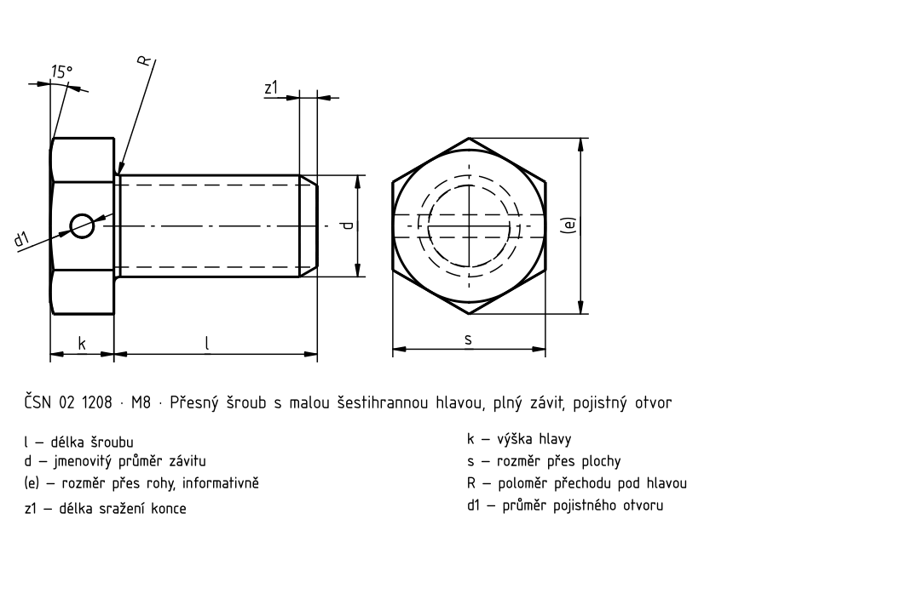
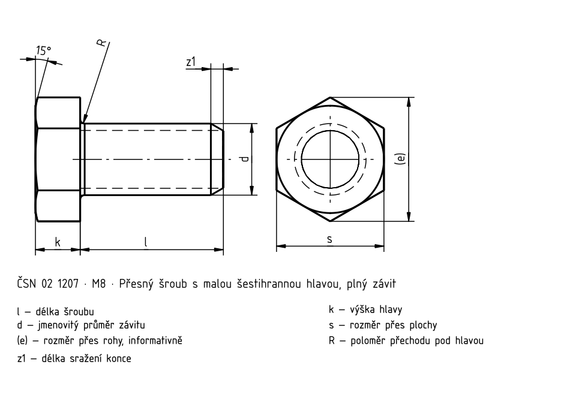
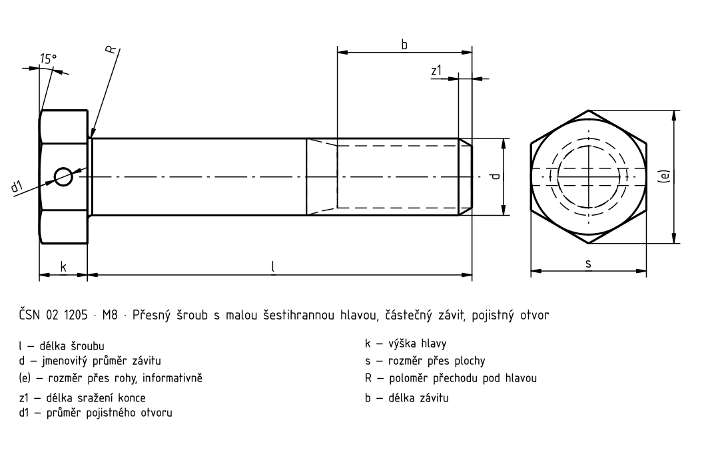
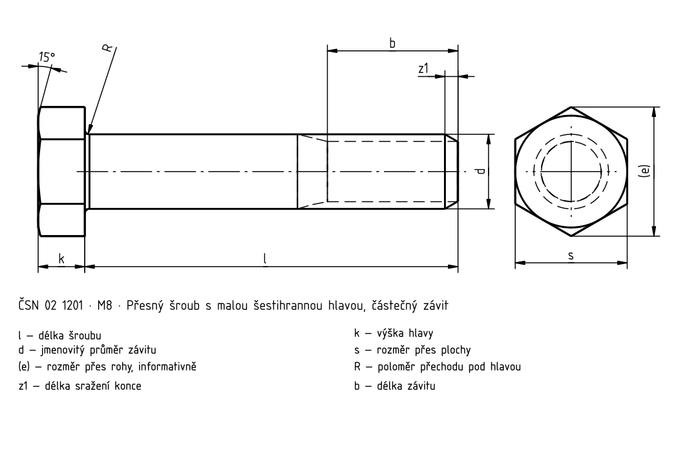

Přesné šrouby s malou šestihrannou hlavou
Historický podklad; číselné hodnoty a výjimky nejsou úplně ověřené proti platné normě.




Přesné šrouby s malou šestihrannou hlavou · Rozměry
| Parametr | M6 | – | (M7) | – | M8 | M8×1 | M10 | M10×1,25 | M12 | M12×1,25 | M14 | M14×1,5 | M16 | M16×1,5 |
|---|---|---|---|---|---|---|---|
| a _max. | 2,5 | 2,5 | 3 | 4 | 4 | 4,5 | 4,5 |
| b | 11 | 13 | 14 | 16 | 18 | 20 | 22 |
| d 1 | 1,6 | 1,6 | 1,8 | 1,8 | 2 | 2 | 3 |
| e | 10,4 | 12,7 | 13,8 | 16,2 | 19,6 | 21,9 | 25,4 |
| k | 4 | 4,5 | 5 | 6 | 7 | 8 | 9 |
| R | 0,3 | 0,3 | 0,5 | 0,5 | 1 | 1 | 1 |
| s | 9 | 11 | 12 | 14 | 17 | 19 | 22 |
| X | 2,5 | 2,5 | 3,2 | 3,8 | 4,3 | 5,0 | 5,0 |
| X | – | – | 2,5 | 3,2 | 3,2 | 3,8 | 3,6 |
| z | 1,0 | 1,0 | 1,4 | 1,6 | 1,6 | 1,6 | 2,0 |
Přesné šrouby s malou šestihrannou hlavou · Orientační hmotnosti
| l | l _1 | M6 | – [g/1] | (M7) | – [g/1] | M8 | M8×1 [g/1] | M10 | M10×1,25 [g/1] | M12 | M12×1,25 [g/1] | M14 | M14×1,5 [g/1] | M16 | M16×1,5 [g/1] |
|---|---|---|---|---|---|---|---|---|
| — | 8 | 3,3 | — | — | — | — | — | — |
| — | 10 | 3,7 | — | — | — | — | — | — |
| — | 12 | 4 | 6,3 | 8,2 | — | — | — | — |
| — | (14) | 4,4 | 6,8 | 8,8 | 14,4 | — | — | — |
| — | 16 | 4,7 | 7,3 | 9,5 | 15,4 | — | — | — |
| — | (18) | 5,1 | 7,8 | 10,1 | 16,4 | 25,9 | — | — |
| — | 20 | 5,5 | 8,3 | 10,8 | 17,4 | 27,3 | 30,3 | 54,3 |
| — | (22) | 5,6 | 8,8 | 11,4 | 18,4 | 28,8 | 40,3 | 57,0 |
| — | 25 | 6,3 | 9,5 | 12,4 | 19,9 | 31,0 | 43,3 | 61,0 |
| — | (28) | 6,8 | 10,2 | 13,4 | 21,4 | 33,2 | 46,3 | 65,0 |
| — | 30 | 7,2 | 10,7 | 14,0 | 22,4 | 34,6 | 48,3 | 67,7 |
| — | (32) | 7,6 | 11,2 | 14,6 | 23,4 | 36,1 | 50,3 | 70,4 |
| — | 35 | 8,1 | 12,0 | 15,6 | 24,9 | 38,2 | 53,3 | 74,3 |
| — | (38) | — | 12,7 | 16,6 | 26,4 | 40,4 | 56,3 | 78,3 |
| — | 40 | — | 13,2 | 17,2 | 27,4 | 41,9 | 58,3 | 81,0 |
| — | 42 | — | — | — | 28,4 | 43,3 | 60,3 | 83,7 |
| — | 45 | — | — | — | 29,9 | 45,5 | 63,3 | 67,7 |
| — | 48 | — | — | — | — | 47,7 | 66,3 | 91,7 |
| — | 50 | — | — | — | — | 49,1 | 68,3 | 94,3 |
| — | 52 | — | — | — | — | — | 70,3 | 97,0 |
| 16 | — | 5,0 | — | — | — | — | — | — |
| 18 | — | 5,5 | — | — | — | — | — | — |
| 20 | — | 5,9 | 8,8 | — | — | — | — | — |
| 22 | — | 6,4 | 9,4 | 12,0 | — | — | — | — |
| 25 | — | 7,0 | 10,2 | 13,2 | 21,1 | — | — | — |
| 28 | — | 7,7 | 11,1 | 14,3 | 22,9 | — | — | — |
| 30 | — | 8,1 | 11,7 | 15,1 | 24,1 | 37,3 | — | — |
| 32 | — | 8,5 | 12,3 | 15,9 | 25,3 | 39,2 | 53,0 | — |
| 35 | — | 9,2 | 13,1 | 1L0 | 27,1 | 41,9 | 56,5 | 75,9 |
| 38 | — | 9,8 | 14,0 | 18,1 | 28,9 | 44,6 | 60,1 | 80,5 |
| 40 | — | 10,3 | 14,6 | 18,9 | 30,2 | 46,4 | 62,5 | 83,6 |
| 42 | — | 10,7 | 15,2 | 19,7 | 31,4 | 48,3 | 64,8 | 85,7 |
| 45 | — | 11,3 | 16,1 | 20,8 | 33,2 | 51,0 | 68,4 | 91,4 |
| 48 | — | 12,0 | 17,0 | 22,0 | 35,0 | 53,8 | 72,0 | 96,0 |
| 50 | — | 12,4 | 17,6 | 22,8 | 36,2 | 55,6 | 74,4 | 99,1 |
| 52 | — | 12,8 | 18,2 | 23,6 | 37,4 | 57,4 | 76,8 | 102 |
| 55 | — | 13,4 | 19,1 | 24,7 | 39,2 | 80,2 | 80,3 | 107 |
| 58 | — | 14,1 | 200 | 25,8 | 41,1 | 62,9 | 83,9 | 112 |
| 60 | — | 14,5 | 20,6 | 28,8 | 42,3 | 64,7 | $,2 | 115 |
| 62 | — | 15,0 | 21,2 | 27,4 | 43,5 | 66,5 | 88,6 | 118 |
| 65 | — | 15,8 | 22,0 | 28,5 | 45,4 | 69,3 | 92,2 | 122 |
| 68 | — | 16,3 | 22,9 | 29,6 | 47,3 | 72,0 | 95,7 | 127 |
| 70 | — | 16,7 | 23,5 | 30,4 | 48,5 | 73,9 | 98,1 | 130 |
| 75 | — | 17,8 | 250 | 32,4 | 51; | 78,5 | 104 | 138 |
| 80 | — | 18,8 | 26,4 | 34,3 | 54,5 | 83,1 | 110 | 146 |
| 85 | — | 20,0 | 27,8 | 36,2 | 57,4 | 87,8 | 116 | 153 |
| 90 | — | 21,0 | 293 | 38,1 | 50,5 | 92,2 | 122 | 161 |
| 95 | — | — | 31,2 | 40,0 | 63,4 | 5,8 | 128 | 169 |
| 100 | — | — | 32,2 | 420 | 66,4 | 101 | 134 | 177 |
| 105 | — | — | — | — | 69,4 | 108 | 140 | 185 |
| 110 | — | — | — | — | 72,4 | 110 | 146 | 192 |
| 115 | — | — | — | — | 75,4 | 115 | 152 | 200 |
| 120 | — | — | — | — | 78,4 | 120 | 158 | 208 |
| 125 | — | — | — | — | 81,4 | 124 | 164 | 216 |
| 130 | — | — | — | — | 84,4 | 129 | 168 | 223 |
| 135 | — | — | — | — | 87,4 | 133 | 175 | 231 |
| 140 | — | — | — | — | 90,4 | 138 | 181 | 239 |
| 145 | — | — | — | — | 93,4 | 143 | 187 | 247 |
| 150 | — | — | — | — | 96,4 | 147 | 193 | 255 |
| 155 | — | — | — | — | 99,4 | 152 | 199 | 262 |
| 160 | — | — | — | — | 102 | 157 | 205 | 270 |
| 170 | — | — | — | — | — | — | 217 | 285 |
| 180 | — | — | — | — | — | — | 229 | 300 |
Přesné šrouby s malou šestihrannou hlavou · Rozměry
| Parametr | M6 | – | (M7) | – | M8 | M8×1 | M10 | M10×1,25 | M12 | M12×1,25 | M14 | M14×1,5 |
|---|---|---|---|---|---|---|
| a _max. | 2,5 | 2,5 | 3 | 4 | 4 | 4,5 |
| b | 11 | 13 | 14 | 16 | 18 | 20 |
| d 1 | 1,6 | 1,6 | 1,8 | 1,8 | 2 | 2 |
| e | 10,4 | 12,7 | 13,8 | 16,2 | 19,6 | 21,9 |
| k | 4 | 4,5 | 5 | 6 | 7 | 8 |
| R | 0,3 | 0,3 | 0,5 | 0,5 | 1 | 1 |
| s | 9 | 11 | 12 | 14 | 17 | 19 |
| X | 2,5 | 2,5 | 3,2 | 3,8 | 4,3 | 5,0 |
| X | – | – | 2,5 | 3,2 | 3,2 | 3,8 |
| z | 1,0 | 1,0 | 1,4 | 1,6 | 1,6 | 1,6 |
Přesné šrouby s malou šestihrannou hlavou · Rozměry
| Parametr | M16 | M16×1,5 |
|---|---|
| a _max. | 4,5 |
| b | 22 |
| d 1 | 3 |
| e | 25,4 |
| k | 9 |
| R | 1 |
| s | 22 |
| X | 5,0 |
| X | 3,6 |
| z | 2,0 |
Přesné šrouby s malou šestihrannou hlavou · Orientační hmotnosti
| l | l _1 | M6 | – [g/1] | (M7) | – [g/1] | M8 | M8×1 [g/1] | M10 | M10×1,25 [g/1] | M12 | M12×1,25 [g/1] |
|---|---|---|---|---|---|---|
| — | 8 | 3,3 | — | — | — | — |
| — | 10 | 3,7 | — | — | — | — |
| — | 12 | 4 | 6,3 | 8,2 | — | — |
| — | (14) | 4,4 | 6,8 | 8,8 | 14,4 | — |
| — | 16 | 4,7 | 7,3 | 9,5 | 15,4 | — |
| — | (18) | 5,1 | 7,8 | 10,1 | 16,4 | 25,9 |
| — | 20 | 5,5 | 8,3 | 10,8 | 17,4 | 27,3 |
| — | (22) | 5,6 | 8,8 | 11,4 | 18,4 | 28,8 |
| — | 25 | 6,3 | 9,5 | 12,4 | 19,9 | 31,0 |
| — | (28) | 6,8 | 10,2 | 13,4 | 21,4 | 33,2 |
| — | 30 | 7,2 | 10,7 | 14,0 | 22,4 | 34,6 |
| — | (32) | 7,6 | 11,2 | 14,6 | 23,4 | 36,1 |
| — | 35 | 8,1 | 12,0 | 15,6 | 24,9 | 38,2 |
| — | (38) | — | 12,7 | 16,6 | 26,4 | 40,4 |
| — | 40 | — | 13,2 | 17,2 | 27,4 | 41,9 |
| — | 42 | — | — | — | 28,4 | 43,3 |
| — | 45 | — | — | — | 29,9 | 45,5 |
| — | 48 | — | — | — | — | 47,7 |
| — | 50 | — | — | — | — | 49,1 |
| — | 52 | — | — | — | — | — |
| 16 | — | 5,0 | — | — | — | — |
| 18 | — | 5,5 | — | — | — | — |
| 20 | — | 5,9 | 8,8 | — | — | — |
| 22 | — | 6,4 | 9,4 | 12,0 | — | — |
| 25 | — | 7,0 | 10,2 | 13,2 | 21,1 | — |
| 28 | — | 7,7 | 11,1 | 14,3 | 22,9 | — |
| 30 | — | 8,1 | 11,7 | 15,1 | 24,1 | 37,3 |
| 32 | — | 8,5 | 12,3 | 15,9 | 25,3 | 39,2 |
| 35 | — | 9,2 | 13,1 | 1L0 | 27,1 | 41,9 |
| 38 | — | 9,8 | 14,0 | 18,1 | 28,9 | 44,6 |
| 40 | — | 10,3 | 14,6 | 18,9 | 30,2 | 46,4 |
| 42 | — | 10,7 | 15,2 | 19,7 | 31,4 | 48,3 |
| 45 | — | 11,3 | 16,1 | 20,8 | 33,2 | 51,0 |
| 48 | — | 12,0 | 17,0 | 22,0 | 35,0 | 53,8 |
| 50 | — | 12,4 | 17,6 | 22,8 | 36,2 | 55,6 |
| 52 | — | 12,8 | 18,2 | 23,6 | 37,4 | 57,4 |
| 55 | — | 13,4 | 19,1 | 24,7 | 39,2 | 80,2 |
| 58 | — | 14,1 | 200 | 25,8 | 41,1 | 62,9 |
| 60 | — | 14,5 | 20,6 | 28,8 | 42,3 | 64,7 |
| 62 | — | 15,0 | 21,2 | 27,4 | 43,5 | 66,5 |
| 65 | — | 15,8 | 22,0 | 28,5 | 45,4 | 69,3 |
| 68 | — | 16,3 | 22,9 | 29,6 | 47,3 | 72,0 |
| 70 | — | 16,7 | 23,5 | 30,4 | 48,5 | 73,9 |
| 75 | — | 17,8 | 250 | 32,4 | 51; | 78,5 |
| 80 | — | 18,8 | 26,4 | 34,3 | 54,5 | 83,1 |
| 85 | — | 20,0 | 27,8 | 36,2 | 57,4 | 87,8 |
| 90 | — | 21,0 | 293 | 38,1 | 50,5 | 92,2 |
| 95 | — | — | 31,2 | 40,0 | 63,4 | 5,8 |
| 100 | — | — | 32,2 | 420 | 66,4 | 101 |
| 105 | — | — | — | — | 69,4 | 108 |
| 110 | — | — | — | — | 72,4 | 110 |
| 115 | — | — | — | — | 75,4 | 115 |
| 120 | — | — | — | — | 78,4 | 120 |
| 125 | — | — | — | — | 81,4 | 124 |
| 130 | — | — | — | — | 84,4 | 129 |
| 135 | — | — | — | — | 87,4 | 133 |
| 140 | — | — | — | — | 90,4 | 138 |
| 145 | — | — | — | — | 93,4 | 143 |
| 150 | — | — | — | — | 96,4 | 147 |
| 155 | — | — | — | — | 99,4 | 152 |
| 160 | — | — | — | — | 102 | 157 |
| 170 | — | — | — | — | — | — |
| 180 | — | — | — | — | — | — |
Přesné šrouby s malou šestihrannou hlavou · Orientační hmotnosti
| l | M14 | M14×1,5 [g/1] | M16 | M16×1,5 [g/1] |
|---|---|---|
| — | — | — |
| — | — | — |
| — | — | — |
| — | — | — |
| — | — | — |
| — | — | — |
| — | 30,3 | 54,3 |
| — | 40,3 | 57,0 |
| — | 43,3 | 61,0 |
| — | 46,3 | 65,0 |
| — | 48,3 | 67,7 |
| — | 50,3 | 70,4 |
| — | 53,3 | 74,3 |
| — | 56,3 | 78,3 |
| — | 58,3 | 81,0 |
| — | 60,3 | 83,7 |
| — | 63,3 | 67,7 |
| — | 66,3 | 91,7 |
| — | 68,3 | 94,3 |
| — | 70,3 | 97,0 |
| 16 | — | — |
| 18 | — | — |
| 20 | — | — |
| 22 | — | — |
| 25 | — | — |
| 28 | — | — |
| 30 | — | — |
| 32 | 53,0 | — |
| 35 | 56,5 | 75,9 |
| 38 | 60,1 | 80,5 |
| 40 | 62,5 | 83,6 |
| 42 | 64,8 | 85,7 |
| 45 | 68,4 | 91,4 |
| 48 | 72,0 | 96,0 |
| 50 | 74,4 | 99,1 |
| 52 | 76,8 | 102 |
| 55 | 80,3 | 107 |
| 58 | 83,9 | 112 |
| 60 | $,2 | 115 |
| 62 | 88,6 | 118 |
| 65 | 92,2 | 122 |
| 68 | 95,7 | 127 |
| 70 | 98,1 | 130 |
| 75 | 104 | 138 |
| 80 | 110 | 146 |
| 85 | 116 | 153 |
| 90 | 122 | 161 |
| 95 | 128 | 169 |
| 100 | 134 | 177 |
| 105 | 140 | 185 |
| 110 | 146 | 192 |
| 115 | 152 | 200 |
| 120 | 158 | 208 |
| 125 | 164 | 216 |
| 130 | 168 | 223 |
| 135 | 175 | 231 |
| 140 | 181 | 239 |
| 145 | 187 | 247 |
| 150 | 193 | 255 |
| 155 | 199 | 262 |
| 160 | 205 | 270 |
| 170 | 217 | 285 |
| 180 | 229 | 300 |